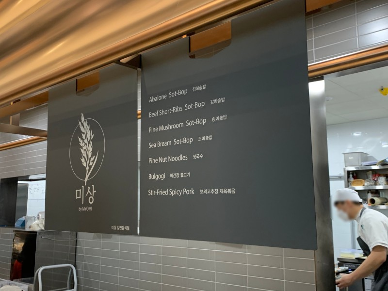

따듯한 음식으로 겨울 이기기
'미상' 한식파인다이닝 레스토랑 '묘미'에서 세컨 브랜드로 론칭한 솥밥
전문점입니다.
대표 메뉴는 '골드퀸 3호', '백진주' 쌀을 섞어 갓지어낸 밥과
제철식재료로 꾸린 밑반찬, 뜨근한 국이 한 상 차림으로 나오는 '솥밥'.
담백한 도미가 통으로 올라간 '도미 솥밥'과 달짝지근한 갈비를 올린
'갈비 솥밥'등 입맛에 맞게 골마거는 재미가 쏠쏠합니다.

주소: 서울 중구 다산로 149 1층
영업시간: 월~금 11:00 ~ 21:00 / 토~일 11:00 ~ 20:30
추천메뉴: 미상솥밥, 전복솥밥, 갈비솥밥
미상의 매뉴

미상솥밥

갈비솥밥